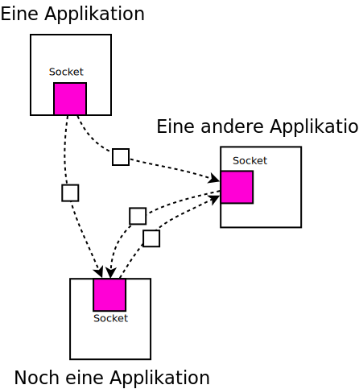

CAN/Linux Basics¶
Why This Talk?¶
Everything is very complicated ((C) Fred Sinowatz) … if things are not kept apart
CAN bus is not usually associated with simplicity
⟶ Linux makes it simple by keeping matters apart
Network programming ⟶ common knowledge
SocketCAN: donated by Volkswagen
Application is a network application
not bound to hardware
CAN controller independent ⟶ controllers can be exchanged
Programming language independent (Python is best of course 😘)
Special goodie: virtual CAN bus
⟶ development and testing on the PC, no hardware at all needed
Network Programming: Datagram Exchange¶
Packet traffic (no connection) ⟶ datagrams
|
 |
{kind=link}
And CAN?¶
Very small packets (max. 8 bytes payload)
Bus arbitration, packet prioritization, and “application” done by packet IDs
No addresses, only broadcasts
⟶ looks like network, is network
{kind=link}
One CAN Network Packet …¶
Defined as a C struct
In host byteorder
Python:
struct.pack(),struct.unpack()
#include <linux/can.h>
struct can_frame {
canid_t can_id; /* 32 bit CAN_ID + EFF/RTR/ERR flags */
__u8 can_dlc; /* frame payload length */
__u8 data[8] __attribute__((aligned(8)));
};